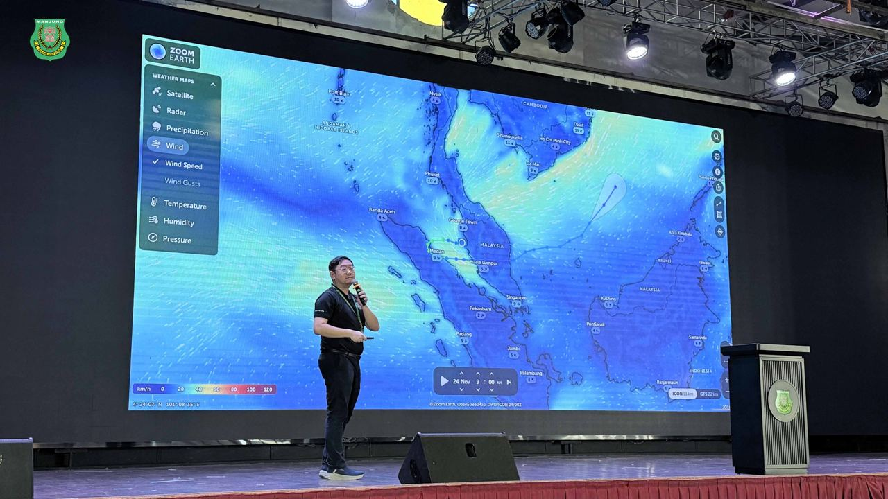
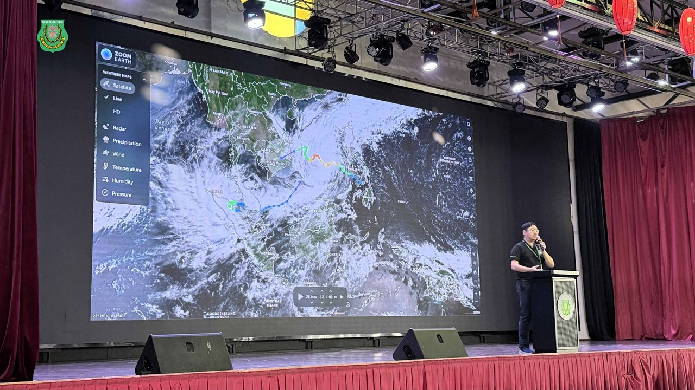
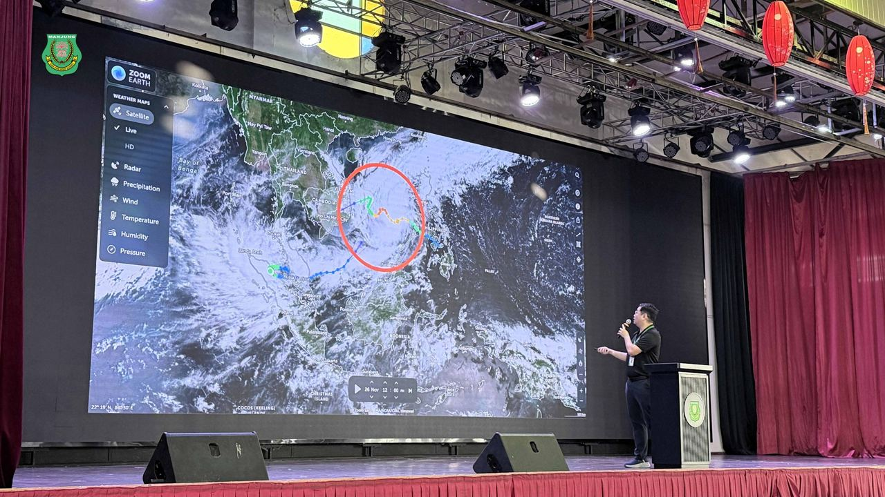
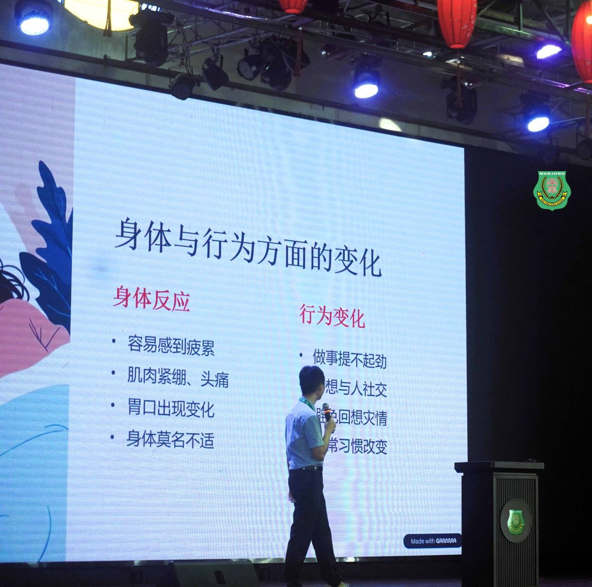

风雨后的第一堂课：
风雨后的第一堂课：
南华独中办防灾与心理修缮讲座
当罕见的热带风暴“森纳尔”（Senyar）过境，留下的不仅是倒塌的树木与满地泥泞，更是对温室花朵们的一次震撼教育。
校长陈丽冰博士：
#懂方程式更要懂生存逻辑
本校虽在本次风灾中受到一定程度波及，但校方并未止步于硬件修缮，而是第一时间关注学生。为此，校方日前紧急召开了一场题为 “#灾难教会我们的是人类最深的真相” 的特别讲堂，由电脑资讯处暨地理老师 黄冠铭老师 及辅导处主任叶佳盛老师 联手主讲，并由校长 陈丽冰博士 进行总结，为全校师生上了一堂刻骨铭心的生命教育课。
#打破地理安全迷思，
#黄冠铭吁备战72小时
“马来西亚真的不再安全了吗？” 地理老师 #黄冠铭 以此为题，通过科学数据与气象图表，冷静地向学生剖析了“森纳尔”如何在赤道附近“作弊”般地形成。他指出，随着气候变迁，马来西亚作为的天然屏障已逐渐失效，学生必须摒弃侥幸心理。 黄老师在讲座中不仅传授了识别风险的地理知识，更务实地列出了 “#生存72小时” 的关键清单——从简易急救包、重要文件防水处理到心理建设。 “救援可能会迟到，你必须撑过那黄金72小时。”这句振聋发聩的提醒，让习惯了安逸生活的学子们第一次意识到，生存能力并非电影情节，而是必备技能。
#风雨过后的心灵重建
#叶佳盛：#恐惧是正常的
灾难过后，倒塌的围墙易修，受惊的心墙难抚。辅导处主任 #叶佳盛老师 在讲座中引导学生正视灾后的心理反应。 “感到焦虑、易怒、甚至做噩梦，这些并不是软弱的表现，而是身体在进行压力调适的正常反应。” 叶老师透过“风雨过后，心光闪耀”的主题，向学生传授了调节情绪的实用技巧，特别是针对由于远离父母而由于灾情产生不安感的宿舍生，给予了重点安抚。他强调，在关注物质损失的同时，我们更需确认彼此内心的安好，允许自己脆弱，才能重建坚强。
#敬畏自然是生存的底色
活动尾声，校长 #陈丽冰博士 发表了引人省思总结。她引用近期香港大埔大火、合艾洪水及本地风灾为例，直言人类引以为傲的文明秩序，在自然灾害面前薄如蝉翼。
“我们给孩子报无数补习班，让他们考最好的学校，却往往忘了教他们：遇上火如何爬？遇上水如何逃？遇上风暴如何判断生死的一秒。” 陈校长的致辞字字珠玑，发人深省：“这个时代的孩子会解复杂的方程式、会背诵艰涩的定义、会操作精密的平板，却不一定知道‘烟往上走，人往下逃’的最基本生存逻辑。”
她勉励全体师生，敬畏自然并非怯懦，而是承认自身的渺小，并在无常面前做好万全的准备。
#把灾难变成教材
这场讲座不仅是一次防灾演习，更是一场关于生命的洗礼。
在追求学术卓越之前，也不忘教会孩子如何在风雨中站立，如何在无常中生存。



